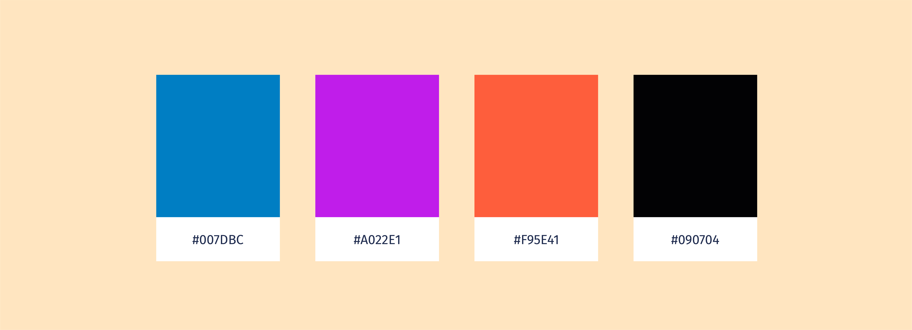
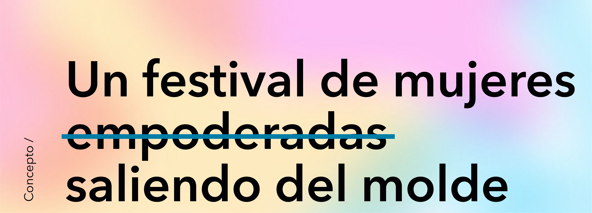
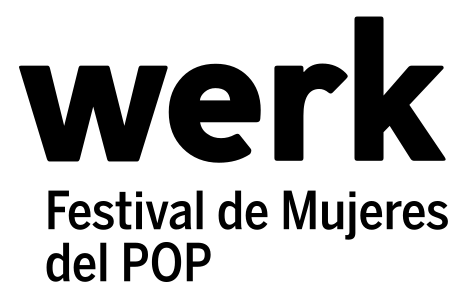
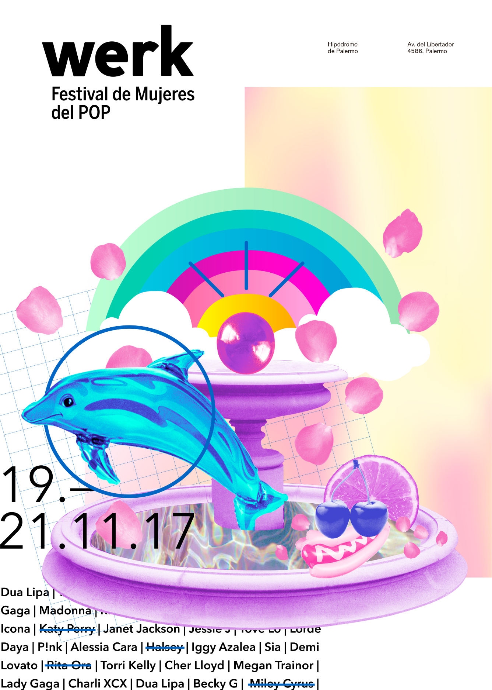

<!doctype html>

<html lang="es">
    <head>
        <meta charset="utf-8">
        <title>Werk - Victoria Vullioud</title>
        <link rel="stylesheet" href="estilos.css">
        <link href="imgs/favicon.png" rel="shortcut icon">
        <link rel="stylesheet" href="https://use.fontawesome.com/releases/v5.3.1/css/all.css" integrity="sha384-mzrmE5qonljUremFsqc01SB46JvROS7bZs3IO2EmfFsd15uHvIt+Y8vEf7N7fWAU" crossorigin="anonymous">
        <link rel="stylesheet" href="swiper/css/swiper.css">
    </head>

    <body>
            <div class="header">
                <a href="index.html" class="logo">
                    
                </a>
                <ul class="lang">
                    <li>
                        <a href="index.html">ES</a>
                    </li>
                    <li>
                        <a lang="en" href="proximamente.html">EN</a>
                    </li>
                </ul>
            </div> <!-- .header -->
            
            <div class="left">
                <a href="proyectos.html">Proyectos</a>
            </div>  <!-- .left -->

            <main>
                <section class="hero werk-hero">
                    <div class="werk-hero-text">
                        <h1>Werk</h1>
                        <p>Festival de mujeres del Pop</p> 
                    </div>
                </section> <!-- .index-hero -->
                <section class="project-description">
                    <div class="project-description-left">
                        <ul class="project-descrip-list">
                            <li class="project-list-category">CATEGORÍA</li>
                                <ul>
                                    <li>Branding</li>
                                    <li>Editorial</li>
                                    <li>Diseño web</li>
                                </ul>
                            </li>
                            <li class="project-list-category category-year">AÑO</li>
                                <ul>
                                    <li>2017</li>
                                </ul>
                        </ul>
                    </div>
                    <div class="project-description-right">
                        <h4 class="project-list-category">ACERCA DEL PROYECTO</h4>
                        <p>Werk es un festival ficticio realizado proyecto final de la materia Diseño gráfico III. El trabajo consistió en realizar toda la identidad gráfica y verbal del mismo.</p>
                        <p>El trabajo comprende cuatro etapas, a través de las cuales se produce la apertura del sistema gráfico.</p> 
                                
                    </div>
                </section> <!-- .project-description -->

                <section class="swiper-container">
                    <div class="swiper-wrapper">
                        <div class="swiper-slide">
                            <div class="indication-swiper"><p>Deslizar </p><i class="fas fa-arrow-right arrow-swiper"></i></div>
                            
                        </div>
                        <div class="swiper-slide">
                            
                        </div>
                        <div class="swiper-slide">
                            
                        </div>
                        
                    </div>

                </section> <!-- .swiper container -->
                
                <section class="project-content-container">
                    <div class="werk-content-01">
                        
                        
                        <p>Las composiciones fueron realizadas digitalmente, editando las imagenes para componerlas en collages.</p>
                    </div>
                    <div class="werk-content-02">
                        
                    </div>
                    <div class="werk-content-03">
                        <p>Desplegable institucional y programático /</p>
                        <!--  -->

                    </div>
                    
                    <!-- <div class="werk-content-04">
                        <p>Piezas de promoción</p>
                    </div> -->
                    
                    <a class="project-behance-link" href="https://www.behance.net/gallery/67673709/WERK-Festival-de-Mujeres-del-POP">Miralo completo en mi Behance</a>

                    <div class="project-footer-links">
                        <div>
                            <h4>PRÓXIMO PROYECTO</h4>
                            <a href="proyecto-siluetas.html">Siluetas</a>
                        </div>
                        
                    </div>

                </section>

            </main>

            <footer>
                <div class="footer-title">
                    <h3>¡Me interesan escuchar nuevas propuestas,<br>así que no seas timido y escribime!</h3>
                </div>
                <div class="footer-contact">
                    <ul>
                        <li class="footer-contact-elements footer-contact-links">
                            <a href="contacto.html">¡Contactame!</a>
                        </li>
                        <li class="footer-contact-elements">Buenos Aires,<br>Argentina</li>
                        <li class="footer-contact-elements footer-contact-email">+54 11 4563 4831<br>
                            <a href="">vv.works@gmail.com</a>
                        </li>
                        <li class="footer-contact-elements footer-contact-links">
                            <a href=""><i class="fab fa-facebook-f"></i></a>
                        </li>
                        <li class="footer-contact-elements footer-contact-links">
                            <a href="https://www.behance.net/VictoriaVullioud" target="blank"><i class="fab fa-behance"></i></a>
                        </li>
                        <li class="footer-contact-elements footer-contact-links">
                            <a href="https://linkedin.com/in/victoria-vullioud/" target="blank"><i class="fab fa-linkedin-in"></i></a>
                        </li>
                    </ul>
                </div>
                <div class="footer-legal">
                    <p>Victoria Vullioud</p>
                    <p>© 2018 Diseño y programación por Victoria Vullioud</p>
                    <a href="">Volver arriba <i class="fas fa-arrow-up"></i></a>
                </div>
            </footer>

            <div class="right">
                <a href="perfil.html">Sobre mi</a>
            </div>  <!-- .right -->

            <div class="contact-nav"
                data-top="display:inherit;
                        animation-play-state: paused;"
                data-400-end="
                        animation-play-state: running;"
                data-300-end="display: none;">
                        <a href="contacto.html" class="contact">Contacto</a>
                    
            </div>  <!-- .contact-nav -->

            <script src="js/skrollr.min.js"></script>
            <script>
                skrollr.init();
            </script>
            <script src="swiper/js/swiper.min.js"></script>
            <script>
                    var mySwiper = new Swiper ('.swiper-container', {
                      // Optional parameters
                      direction: 'horizontal',
                      freeMode: 'true',
                      slidesPerView: 1.05,
                      grabCursor: true
                      
                    });
                    mySwiper.on('touchMove', function () {
                        var arrow = document.querySelector('.indication-swiper');
                        arrow.classList.add("hideAnimated");
                    });

            </script>
            <script>
                var obj = document.querySelector('.floatCenter')
    
                function parallax() {
                    var yPos = 0 - window.pageYOffset/6;	
                    obj.style.top = 430 + yPos + "%";
                }

                window.addEventListener("scroll",parallax);


            </script>
    </body>


</html>